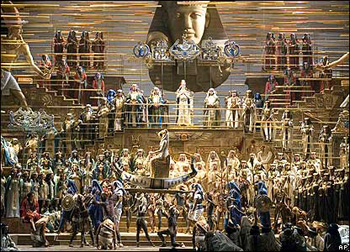

Skandal u La Scali
Da li ste pratili vesti u vezi sa skandalom u La Scali? Fenomenalno! Ključne reči: tenor Roberto Alanja, (Alagna), lođisti, zvižduci, napuštanje predstave, raskid ugovora, 'labudova pesma' ispred zgrade opere...
Sezona je u La Scali otvorena 7. decembra izvjedbom Aide u kojoj je Roberto Alanja - Radames. Sa druge strane imamo te lođioniste (loggionisti), grupu ekstremnih ljubitelja opere koji sede u najudaljenijem, najjeftinijem delu Scale. Iz vesti BBCja:
Small group of opera buffs known as the 'loggionisti' standing or sitting in the top-most gallery of the 18th-Century opera house had booed, whistled and heckled the international opera star.
The 'loggionisti' - who claim to know every note of every opera by heart - are notorious for their rowdy behaviour when they consider a performance to be below standard.
Operska zvezda se okreće i odlazi sa scene u sred predstave (na njegovo mesto uleće zamena, tzv. understudy. Pošto nije bio pripremljen za ovu situaciju, novi Radames je pevao u farmerkama i t-shirtu! Kritika kaže da je bio odličan).
Stvar se dalje komplikuje kada uprava La Scale odluči da raskine ugovor sa Alanjom (neprofesionalizam, nedopustivo ponašanje, itd) koji je podrazumevao još pet izvođenja istog spektakla.
"His behaviour has created a rift between the artist and the audience, and there is no possibility of repairing this relationship," spokesman Carlo Maria Cella said.
"He did not leave because he was sick; he left voluntarily."
U publici su se nalazili, između ostalih, i Romano Prodi i Angela Merkel. Najbolja mesta prodavana su za preko 2.000 evrica.
Alanja smatra da je La Scala morala da ga zaštiti, a zbog raskida ugovora već je podneo tužbu.
Šta se posle toga dešavalo?
In the cold night air, surrounded by a small group of well-wishers, he sang a touching farewell aria, not from Aida, but from Puccini's Madame Butterfly: "Addio fiorito asil, di letizia e d'amore" (Farewell oh happy home, farewell, home of love!)
Mislim, nije li ovo sjajno? :) Ne radi se o Raki Marićima i Karleušama, u publici nisu Big Lale i Arkan, scenografija nije bolesni Grand šou studio - ovo je pravi, high profile jet-set, i prava, filmska priča.
Pratiću i dalje šta se dešava. Čim bude nešto zanimljivo, tune on na yahti.com!
 RSS feed
RSS feed
 sadržaji se objavljuju pod
sadržaji se objavljuju pod
Inače zvižduke u La Scali doživljavali su i drugi. Ponovo BBC:
Other opera stars, such as Katia Riciarelli and Luciano Pavarotti, have been recalling that they were once booed at La Scala.
Even the legendary Maria Callas, the ultimate prima donna, received the occasional cat-call. She refused to continue with a performance of Norma at La Scala in 1958, although she did complete the first act.